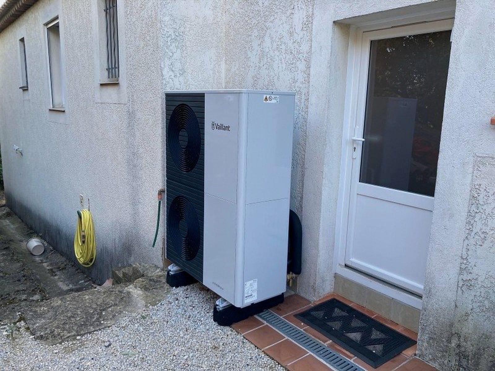
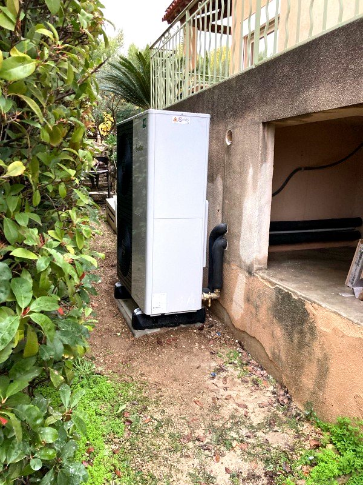
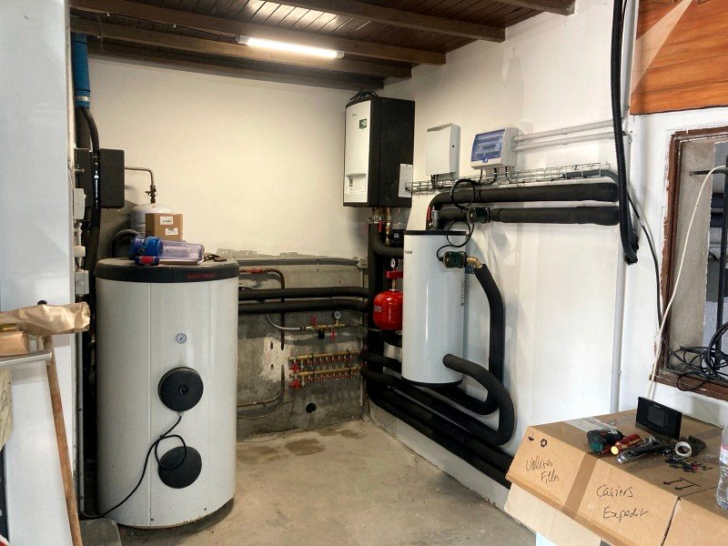

Entretien de pompe à chaleur
L'entretien d'une pompe à chaleur est le gage de sa performance et de sa longue durée de vie. Il est préférable de vous adresser à des professionnels comme AJJY Services pour cette prestation.
Une révision par an est obligatoire sur tout appareil à fluides frigorigènes. Elle donne lieu à un certificat valable deux ans.
Trois raisons de faire entretenir votre appareil
La performance revient à son niveau d'origine
Le nettoyage en profondeur rend à l'appareil sa puissance d'origine. Bien entretenue, une pompe à chaleur chauffe vite, à moindre coût, et de façon homogène.
La durée de vie s'allonge
Quinze à vingt ans si vous l'entretenez. Vous évitez l'accumulation de résidus dans les rouages et les pannes irrécupérables. Nos chauffagistes remplacent en avance les pièces à risque.
Les risques de panne et de fuite diminuent
Les joints doivent rester étanches pour la circulation des fluides. Faites intervenir un professionnel avant l'hiver, plutôt qu'au moment où vous en avez le plus besoin.

Une visite avant la saison de chauffe
Nous programmons les visites avant l'hiver, pour que toute réparation soit faite avant que vous ayez besoin du chauffage.
- Nettoyage en profondeur de l'appareil
- Vidange et remplacement des fluides
- Contrôle de l'étanchéité des joints
- Vérification du système électrique
Ce que comprend la visite
Le déroulé de l'entretien annuel
L'objectif consiste à faire la vidange de l'appareil et à remplacer les fluides. C'est aussi une démarche de sécurité : vous évitez de conserver trop longtemps des fluides qui peuvent devenir nocifs.
Le chauffagiste fait ensuite le tour de votre appareil. Il en assure l'étanchéité et la bonne marche de chaque pièce. Les travaux peuvent même toucher le système électrique.
Le certificat d'entretien
Vous recevez un certificat attestant de la vérification de l'état des fluides et de votre appareil par un professionnel.
Il est valable deux ans et peut être nécessaire pour demander un remboursement auprès de votre assurance en cas d'incident.
Ce que vous pouvez faire vous-même
L'entretien annuel ne vous empêche pas quelques travaux basiques au cours de l'année : nettoyage en surface, remplacement des filtres.
Entretien ou dépannage ?
L'entretien est préventif : il vérifie l'appareil pour réduire les risques de panne. Le dépannage est curatif et intervient après l'incident.

AJJY Services pour votre installation
Spécialiste de la pompe à chaleur à Martigues comme à Aix-en-Provence, AJJY Services s'appuie sur vingt-cinq années d'expérience dans le chauffage économique.
Nous ne proposons pas de devis standard. L'estimation est établie après une étude thermique de votre installation, gratuitement et sans engagement.
Nos spécialistes sont disponibles du lundi au vendredi, 8h à 18h non-stop et se déplacent chez vous.
Questions fréquentes
L'entretien d'une pompe à chaleur est-il obligatoire ?
Pour assurer la bonne marche de votre pompe à chaleur, vous devez avoir réalisé au moins une révision par an. C'est obligatoire sur tous les appareils qui nécessitent l'utilisation de fluides frigorigènes pour fonctionner.
Combien de temps le certificat d'entretien est-il valable ?
Le certificat d'entretien est valable pendant deux ans. C'est un justificatif qui peut être nécessaire pour demander un remboursement auprès de votre assurance en cas d'incident.
Quelle est la durée de vie d'une pompe à chaleur ?
Une pompe à chaleur peut être utilisée pendant quinze à vingt ans en moyenne, si vous prenez le temps de l'entretenir comme il se doit. L'entretien évite que les résidus ne s'accumulent dans les rouages de l'appareil et prévient les pannes irrécupérables.
Puis-je réaliser moi-même une partie de l'entretien ?
L'entretien annuel ne vous empêche pas de faire quelques travaux basiques sur votre appareil au cours de l'année, comme le nettoyage en surface ou le remplacement des filtres.
Sur quels appareils intervenez-vous ?
Nous nous adaptons à tous les appareils de chauffe : chaudières, pompes à chaleur, poêles et inserts. Nous intervenons également sur la climatisation et la production d'eau chaude sanitaire.
Un technicien vous répond.
04 84 89 15 86Du lundi au vendredi, 8h à 18h non-stop
Second numéro : 04 91 09 55 80
8 ZAC de la Haute Bedoule
13240 Septèmes-les-Vallons
Demander un devis
Gratuit et sans engagement. Réponse dans les meilleurs délais.
Demande enregistrée
Nous vous recontactons dans les meilleurs délais. Pour une panne en cours, appelez le 04 84 89 15 86.